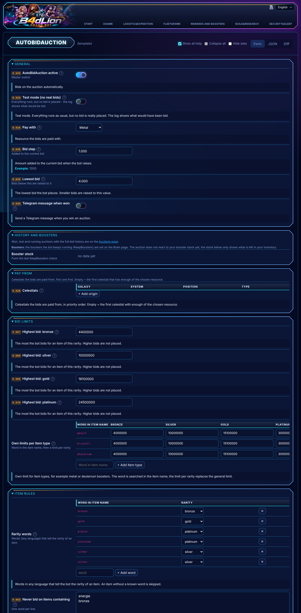

9.025 AutoBidAuction active AutoBidAuction.Active
Bids on the auction automatically.
Automatic bidding in the auction house.

AutoBidAuction.ActiveBids on the auction automatically.
AutoBidAuction.DryRunTest mode. Everything runs as usual, but no bid is really placed. The log shows what would have been bid.
AutoBidAuction.BidResourceResource the bids are paid with.
AutoBidAuction.MinBidFloorThe lowest bid the bot places. Smaller bids are raised to this value.
AutoBidAuction.BidIncrementAmount added to the current bid when the bot raises.
Example: 1000
AutoBidAuction.NotifyTelegramOnWinSend a Telegram message when you win an auction.
AutoBidAuction.CheckIntervalMinLongest pause between two checks, lower value in minutes. A wait longer than the upper value (e.g. until the end of an auction the bot does not bid on) is shortened to a random value between the two. Shorter waits, e.g. in the last 5 minutes, stay as they are.
Example: 5
AutoBidAuction.CheckIntervalMaxLongest pause between two checks, upper value in minutes. 0 = no limit (the bot then sleeps until the end of the auction).
Example: 10
AutoBidAuction.HumanReactionDelayMinMsShortest delay in milliseconds before the bot answers a bid in the final phase. Makes it look human.
AutoBidAuction.HumanReactionDelayMaxMsLongest such delay in milliseconds.
AutoBidAuction.NormalBidReactionDelayMinMsShortest delay in milliseconds before a normal bid (not the final phase).
AutoBidAuction.NormalBidReactionDelayMaxMsLongest such delay in milliseconds.
AutoBidAuction.OriginCelestials the bids are paid from, in priority order. Empty = the first celestial with enough of the chosen resource.
AutoBidAuction.BidEveryNthAuctionOnly bid on every n-th auction (the bot counts the auctions it would otherwise bid on: not blocked by a forbidden word, with a cap). 1 = bid on every auction. The count starts again after a restart.
Example: 3 = bid on the 1st, 4th, 7th ... auction
AutoBidAuction.MaxBidsPerAuctionMost own bids per auction. When reached, the bot stops bidding on that auction (it still wins if nobody outbids it). 0 = no limit. Keeps it out of bidding wars with 100 or more bids.
Example: 10
AutoBidAuction.AllianceWhitelist.ActiveTreat all members of your alliance like the whitelist. The member list comes from the public game API.
AutoBidAuction.AllianceWhitelist.ServerHostHost name of your universe.
Example: sNNN-xx.ogame.gameforge.com
AutoBidAuction.WhitelistPlayer IDs that are never outbid: as soon as one of them is the highest bidder, the bot skips that item.
AutoBidAuction.HighestBids.bronzeThe most the bot bids for an item of this rarity. Higher bids are not placed.
AutoBidAuction.HighestBids.silverThe most the bot bids for an item of this rarity. Higher bids are not placed.
AutoBidAuction.HighestBids.goldThe most the bot bids for an item of this rarity. Higher bids are not placed.
AutoBidAuction.HighestBids.platinumThe most the bot bids for an item of this rarity. Higher bids are not placed.
AutoBidAuction.ForbiddenWordsThe bot never bids on items whose name contains one of these words.
AutoBidAuction.IgnoredBronzeItemNamesBronze items with one of these words in the name are skipped.
AutoBidAuction.BidWar.ActiveBid war brake. Stops bidding when someone keeps raising on purpose, so you do not pay far too much.
AutoBidAuction.BidWar.DebugWrite extra lines about the brake into the log.
AutoBidAuction.BidWar.NotifyTelegramSend a Telegram message when the brake stops a bid.
AutoBidAuction.BidWar.WindowSecsLength in seconds of the time window in which raises are counted.
AutoBidAuction.BidWar.MinLadderStepsNumber of raises in a row that count as a war.
AutoBidAuction.BidWar.GrowthPctThe bid counts as a war when it grows to this percentage of the start value.
AutoBidAuction.BidWar.ReactSecsSeconds the bot waits before it reacts to a suspected war.
AutoBidAuction.BidWar.SameBidderCount it as a war when the same player raises again and again.
AutoBidAuction.BidWar.CooldownSecsSeconds the bot stays quiet after the brake has triggered.
AutoBidAuction.BidWar.SnipeSecsLast seconds of an auction in which the brake is relaxed so a final bid can still be placed. Practically without effect: the game shows the end only in whole minutes (the last bracket is 5 minutes), so a window of seconds is never reached. Leave it as it is.
AutoBidAuction.BidWar.PausePollSecsSeconds between checks while the brake is paused.
AutoBidAuction.BidWar.WindowGrowthPctGrowth in percent inside the time window that counts as a war.
AutoBidAuction.BidWar.WindowMinBidsNumber of bids needed inside the window before it is judged.
AutoBidAuction.BidWar.JumpFactorA single raise this many times bigger than the usual step counts as a jump.
AutoBidAuction.BidWar.JumpMinAbsA jump counts only if it is at least this large in absolute value.
AutoBidAuction.PauseOtherWorkersInFinalPhase.ActiveIn the last 5 minutes of an auction other workers are delayed so they do not block the fast checks.
AutoBidAuction.PauseOtherWorkersInFinalPhase.FeaturesNames of the workers that are delayed, for example AutoFarm, Expeditions.